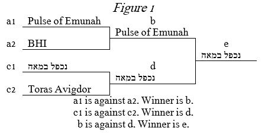

Here at Medrash Madness Inc. we have spent a long time wondering about the phenomenon of many Medrashim, such as the ones depicted above (stolen from the Little Medrash Says) becoming extremely famous, sometimes to the point that people forget what the pasuk actually says. Often, many people live their lives believing that certain p'shatim and stories are written in the Torah itself and are enormously surprised when they find out otherwise. There are many reasons for this, ranging from how preschool morahs find it most interesting to teach the parshah, to various well-known vertlach that are taken as undeniable fact even when there are other answers given.
To that end, we are pleased to announce the Medrash Madness Bracket Challenge. The MM team of experts has worked tirelessly to compile a list of what they believe are the 64 most famous Ma'amarei Chazal on Chumash that are not written explicitly in the Torah. These have been arranged in a bracket format, grouped by the area of the Torah with which they are discussed.
We are calling upon you, the people, to participate in this exciting activity for two reasons: 1) We would like to call everyone's attention to what is written in the Torah and what are just famous Medrashim, and 2) get the answer to the age-old question of what is the most well-known Torah Medrash. Our new website has been designed to aid the implementation of this project. Please fill out the bracket located on the site. Once all the brackets have been filled, our analytics squad will undertake a thorough examination of the results to determine the winning Medrash as well as whose bracket best corresponds to how the people voted. The results will be announced once they have been established.
We thank you in advance for helping with this project and we look forward to what the future will bring.
The brackets are arranged in a tournament format, allowing for multiple one vs one matchups to lead to one big winner. The two contestants are on connected horizontal lines directly above each other and the winner is written on the line extending from their connector. You continue to work from the outside in to keep narrowing the field to end up with one winner. (See Figure 1)
Please vote on which Medrash wins each matchup based on which one you feel is the more well-known, as defined by which one you believe is the one that more people think is an explicit pasuk. (The numbers on the sides are purely for organizational purposes and should not factor into your decision.)